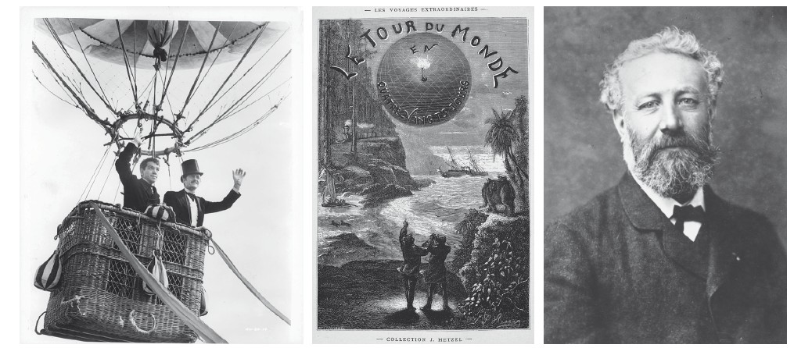

Welcome to the Journey!
Please ensure you have entered your name and today's date in the top right corner before beginning.

Click Next to start Activity 1.
Activity 1: START THINKING ...
1 Work in pairs. Discuss the questions.
Activity 2: Setting the Scene
Phileas Fogg is a rich man who spends a lot of time at the Reform Club, a club for wealthy gentlemen in London. One day, the men read a newspaper article that states that it is possible to travel around the world in 80 days. Mr Fogg says it is, and the other men challenge him to return in 80 days. If he is successful, he will win £20,000. He returns home and meets Passepartout, his servant.
Activity 3: Reading Extract
Listen along as you read the text.
AROUND THE WORLD IN EIGHTY DAYS (1873) Jules Verne
Having won twenty guineas at whist, and taken leave of his friends, Phileas Fogg, at twenty-five minutes past seven, left the Reform Club.
Passepartout, who had conscientiously studied the programme of his duties, was more than surprised to see his master guilty of the inexactness of appearing at this unaccustomed hour; for, according to rule, he was not due in Saville Row until precisely midnight.
Mr Fogg repaired to his bedroom, and called out, 'Passepartout!'
Passepartout did not reply. It could not be he who was called; it was not the right hour.
'Passepartout!' repeated Mr Fogg, without raising his voice.
Passepartout made his appearance.
'I've called you twice,' observed his master.
'But it is not midnight,' responded the other, showing his watch.
'I know it; I don't blame you. We start for Dover and Calais in ten minutes.'
A puzzled grin overspread Passepartout's round face; clearly he had not comprehended his master.
'Monsieur is going to leave home?'
'Yes,' returned Phileas Fogg. 'We are going round the world.'
Passepartout opened wide his eyes, raised his eyebrows, held up his hands, and seemed about to collapse, so overcome was he with stupefied astonishment.
'Round the world!' he murmured.
'In eighty days,' responded Mr Fogg. 'So we haven't a moment to lose.'
'But the trunks?' gasped Passepartout, unconsciously swaying his head from right to left.
'We'll have no trunks; only a carpet-bag, with two shirts and three pairs of stockings for me, and the same for you. We'll buy our clothes on the way. Bring down my mackintosh and travelling-cloak, and some stout shoes, though we shall do little walking. Make haste!'
Passepartout tried to reply, but could not. He went out, mounted to his own room, fell into a chair, and muttered: 'That's good, that is! And I, who wanted to remain quiet!'
He mechanically set about making the preparations for departure. Around the world in eighty days! Was his master a fool? No. Was this a joke, then? They were going to Dover; good! To Calais; good again! After all, Passepartout, who had been away from France five years, would not be sorry to set foot on his native soil again. Perhaps they would go as far as Paris, and it would do his eyes good to see Paris once more. But surely a gentleman so chary of his steps would stop there; no doubt—but, then, it was none the less true that he was going away, this so domestic person hitherto!
By eight o'clock Passepartout had packed the modest carpet-bag, containing the wardrobes of his master and himself; then, still troubled in mind, he carefully shut the door of his room, and descended to Mr Fogg.
Mr Fogg was quite ready. Under his arm might have been observed a red-bound copy of Bradshaw's Continental Railway Steam Transit and General Guide, with its timetables showing the arrival and departure of steamers and railways. He took the carpet-bag, opened it, and slipped into it a goodly roll of Bank of England notes, which would pass wherever he might go.
'You have forgotten nothing?' asked he.
'Nothing, monsieur.'
'My mackintosh and cloak?'
'Here they are.'
'Good! Take this carpet-bag,' handing it to Passepartout. 'Take good care of it, for there are twenty thousand pounds in it.'
Passepartout nearly dropped the bag, as if the twenty thousand pounds were in gold, and weighed him down.
Master and man then descended, the street-door was double-locked, and at the end of Saville Row they took a cab and drove rapidly to Charing Cross. The cab stopped before the railway station at twenty minutes past eight. Passepartout jumped off the box and followed his master, who, after paying the cabman, was about to enter the station, when a poor beggar-woman, with a child in her arms, her naked feet smeared with mud, her head covered with a wretched bonnet, from which hung a tattered feather, and her shoulders shrouded in a ragged shawl, approached, and mournfully asked for alms.
Mr Fogg took out the twenty guineas he had just won at whist, and handed them to the beggar, saying, 'Here, my good woman. I'm glad that I met you;' and passed on.
Passepartout had a moist sensation about the eyes; his master's action touched his susceptible heart.
Two first-class tickets for Paris having been speedily purchased, Mr Fogg was crossing the station to the train, when he perceived his five friends of the Reform.
'Well, gentlemen,' said he, 'I'm off, you see; and, if you will examine my passport when I get back, you will be able to judge whether I have accomplished the journey agreed upon.'
'Oh, that would be quite unnecessary, Mr Fogg,' said Ralph politely. 'We will trust your word, as a gentleman of honour.'
'You do not forget when you are due in London again?' asked Stuart.
'In eighty days; on Saturday, the 21st of December, 1872, at a quarter before nine p.m. Good-bye, gentlemen.'
Phileas Fogg and his servant seated themselves in a first-class carriage at twenty minutes before nine; five minutes later the whistle screamed, and the train slowly glided out of the station.
The night was dark, and a fine, steady rain was falling. Phileas Fogg, snugly ensconced in his corner, did not open his lips. Passepartout, not yet recovered from his stupefaction, clung mechanically to the carpet-bag, with its enormous treasure.
Just as the train was whirling through Sydenham, Passepartout suddenly uttered a cry of despair.
'What's the matter?' asked Mr Fogg.
'Alas! In my hurry—I—I forgot—'
'What?'
'To turn off the gas in my room!'
'Very well, young man,' returned Mr Fogg, coolly; 'it will burn—at your expense.'
Activity 4: Glossary Matching
Match the definitions with the words in bold in the text.
Activity 5: Comprehension
Scroll to read the text again...
Having won twenty guineas at whist, and taken leave of his friends, Phileas Fogg, at twenty-five minutes past seven, left the Reform Club.
Passepartout, who had conscientiously studied the programme of his duties, was more than surprised to see his master guilty of the inexactness of appearing at this unaccustomed hour; for, according to rule, he was not due in Saville Row until precisely midnight.
Mr Fogg repaired to his bedroom, and called out, 'Passepartout!'
Passepartout did not reply. It could not be he who was called; it was not the right hour.
'Passepartout!' repeated Mr Fogg, without raising his voice.
Passepartout made his appearance.
'I've called you twice,' observed his master.
'But it is not midnight,' responded the other, showing his watch.
'I know it; I don't blame you. We start for Dover and Calais in ten minutes.'
A puzzled grin overspread Passepartout's round face; clearly he had not comprehended his master.
'Monsieur is going to leave home?'
'Yes,' returned Phileas Fogg. 'We are going round the world.'
Passepartout opened wide his eyes, raised his eyebrows, held up his hands, and seemed about to collapse, so overcome was he with stupefied astonishment.
'Round the world!' he murmured.
'In eighty days,' responded Mr Fogg. 'So we haven't a moment to lose.'
'But the trunks?' gasped Passepartout, unconsciously swaying his head from right to left.
'We'll have no trunks; only a carpet-bag, with two shirts and three pairs of stockings for me, and the same for you. We'll buy our clothes on the way. Bring down my mackintosh and travelling-cloak, and some stout shoes, though we shall do little walking. Make haste!'
Passepartout tried to reply, but could not. He went out, mounted to his own room, fell into a chair, and muttered: 'That's good, that is! And I, who wanted to remain quiet!'
He mechanically set about making the preparations for departure. Around the world in eighty days! Was his master a fool? No. Was this a joke, then? They were going to Dover; good! To Calais; good again! After all, Passepartout, who had been away from France five years, would not be sorry to set foot on his native soil again. Perhaps they would go as far as Paris, and it would do his eyes good to see Paris once more. But surely a gentleman so chary of his steps would stop there; no doubt—but, then, it was none the less true that he was going away, this so domestic person hitherto!
By eight o'clock Passepartout had packed the modest carpet-bag, containing the wardrobes of his master and himself; then, still troubled in mind, he carefully shut the door of his room, and descended to Mr Fogg.
Mr Fogg was quite ready. Under his arm might have been observed a red-bound copy of Bradshaw's Continental Railway Steam Transit and General Guide, with its timetables showing the arrival and departure of steamers and railways. He took the carpet-bag, opened it, and slipped into it a goodly roll of Bank of England notes, which would pass wherever he might go.
'You have forgotten nothing?' asked he.
'Nothing, monsieur.'
'My mackintosh and cloak?'
'Here they are.'
'Good! Take this carpet-bag,' handing it to Passepartout. 'Take good care of it, for there are twenty thousand pounds in it.'
Passepartout nearly dropped the bag, as if the twenty thousand pounds were in gold, and weighed him down.
Master and man then descended, the street-door was double-locked, and at the end of Saville Row they took a cab and drove rapidly to Charing Cross. The cab stopped before the railway station at twenty minutes past eight. Passepartout jumped off the box and followed his master, who, after paying the cabman, was about to enter the station, when a poor beggar-woman, with a child in her arms, her naked feet smeared with mud, her head covered with a wretched bonnet, from which hung a tattered feather, and her shoulders shrouded in a ragged shawl, approached, and mournfully asked for alms.
Mr Fogg took out the twenty guineas he had just won at whist, and handed them to the beggar, saying, 'Here, my good woman. I'm glad that I met you;' and passed on.
Passepartout had a moist sensation about the eyes; his master's action touched his susceptible heart.
Two first-class tickets for Paris having been speedily purchased, Mr Fogg was crossing the station to the train, when he perceived his five friends of the Reform.
'Well, gentlemen,' said he, 'I'm off, you see; and, if you will examine my passport when I get back, you will be able to judge whether I have accomplished the journey agreed upon.'
'Oh, that would be quite unnecessary, Mr Fogg,' said Ralph politely. 'We will trust your word, as a gentleman of honour.'
'You do not forget when you are due in London again?' asked Stuart.
'In eighty days; on Saturday, the 21st of December, 1872, at a quarter before nine p.m. Good-bye, gentlemen.'
Phileas Fogg and his servant seated themselves in a first-class carriage at twenty minutes before nine; five minutes later the whistle screamed, and the train slowly glided out of the station.
The night was dark, and a fine, steady rain was falling. Phileas Fogg, snugly ensconced in his corner, did not open his lips. Passepartout, not yet recovered from his stupefaction, clung mechanically to the carpet-bag, with its enormous treasure.
Just as the train was whirling through Sydenham, Passepartout suddenly uttered a cry of despair.
'What's the matter?' asked Mr Fogg.
'Alas! In my hurry—I—I forgot—'
'What?'
'To turn off the gas in my room!'
'Very well, young man,' returned Mr Fogg, coolly; 'it will burn—at your expense.'
Read the text again. Answer the questions.
Activity 6: Read Between The Lines
Answer the questions. Give reasons and examples from the text.
Activity 7: Vocabulary
Complete the sentences with the correct words from the glossary in the correct form.
Activity 8: Listening Part 1
Listen to the next part of the story in which Detective Fix, who believes Mr Fogg is a bank robber, offers him help.
Put the words in the order you hear them. (Select 1 to 6). There are two words that you do not hear (leave blank).
Activity 9: Listening Part 2
Listen again. Mark the sentences T (true), F (false) or DS (doesn't say).
Activity 10: Writing
A travel journal entry
Imagine you are either Passepartout or Mr Fogg. You are writing a travel journal entry on the train. Write 220–260 words.
- Paragraph 1: Describe your surroundings. Where are you on the train? What is it like? Who are you with? Is there anyone else there? Is it busy or quiet? What is the weather like?
- Paragraph 2: Say what has happened today and explain why you are on the train. Describe the events in detail.
- Paragraph 3: Explain what you think is going to happen in the next 24 hours.
Journal Entry: Phileas Fogg
Date: 22nd October 1872
I am currently situated in a first-class compartment of the Great Indian Peninsula Railway, hurtling steadily towards Calcutta. The carriage is adequately appointed, though rattling with a rhythmic persistence that defies true comfort. Opposite me sits my newly acquired valet, Passepartout, whose restless disposition contrasts starkly with the tranquil solitude of our enclosed quarters. We are the sole occupants of this compartment; the corridor beyond remains undisturbed, save for the occasional, muffled tread of a conductor. Beyond the soot-stained glass, an oppressive monsoon rain lashes the vibrant Indian countryside, blurring the verdant landscape into a monotonous streak of grey and green.
The exigency of this journey stems from a wager undertaken at the Reform Club merely days prior—a commitment to circumnavigate the globe in precisely eighty days. Today’s embarkation from Bombay commenced smoothly, despite a minor altercation involving Passepartout at a local pagoda, an indiscretion that momentarily threatened to delay our meticulous itinerary. Having secured our passage just as the locomotive’s whistle signaled its imminent departure, we swiftly boarded, exchanging the bustling, spice-scented chaos of the Bombay terminus for the predictable locomotion of the train. Every minute is accounted for, and this railway leg is a critical artery connecting us to the steamer awaiting us on the eastern coast.
Looking ahead to the ensuing twenty-four hours, I anticipate our arrival at the terminus of this railway line, whereupon we shall seamlessly transfer to our next vessel. Assuming the timetable remains accurate, as probability suggests, we will confront no significant impediments. However, I must remain vigilant against unforeseen logistical anomalies. My rigorous calculations allocate no margin for error, and any unexpected disruption to the locomotive's progress will necessitate swift, calculated recalibration to ensure the wager's success remains thoroughly uncompromised.
Final Report Card
Student:
Date: